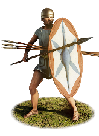

RTR: Imperium Surrectum
RTR: Imperium SurrectumEtruscan Spearmen


Class: spearmen · Category: infantry · Men per unit: 60
Description
Being the backbone of Etruscan armies, these spearmen represent mass levies raised among the common farmers and mountaineers of Etruria, as well as the civic population mobilised in times of war. Lacking the financial means to purchase body armour, these light footmen fight with a basic panoply consisting of a simple tunic, javelins, a thrusting spear, and a large oval shield (thureos) featuring a central vertical barleycorn spine. As they have a higher status than those who fight as slingers and javelinmen, these troops are equipped with regionally mass produced and widely distributed bronze Montefortino or "Etrusco-Thracian" helmets. Taking advantage of their massed numbers, they form the main battle line of the Etruscan armies, but their lack of body armour and lower morale leaves them vulnerable against stronger enemy units and morale shocks. However, while these spearmen lack armour and must rely entirely on their large shields for torso defence, their larger numbers provide them with sufficient mass to hold enemy units in place and exhaust them while the more elite units in the Etruscan armies stand ready to refresh the fight and grant them victory!
Historical background
It is believed that the organisation of Etruscan infantry levies was similar to the class-based census models of central Italy, where property ratings dictated each individual’s military obligations. The Roman social organisation of the centuriata might even be inspired by an Etruscan model. Under the traditional Servian class system recorded by Livy (1.43) and Dionysius of Halicarnassus (4.16–17), citizens of the middle property ranks (specifically the second and third classes) were required to furnish an oblong shield (scutum) and a spear, omitting the bronze cuirasses or coat of mail required of the wealthiest class. By the Middle Roman Republic (300–100 BC), following the progressive conquest of Etruria, Etruscan city-states served as allied contingents (socii) obligated to supply military levies under the formula togatorum. This was a list maintained by the Romans for the purpose of determining the annual military contributions of their Italian allies (Baronowski, ‘The “Formula Togatorum”’, in: Historia: Zeitschrift Für Alte Geschichte 33-2 (1984), pp. 248-252). Livy (9.39) also speaks about the recruiting method of a new Etruscan emergency army which was probably levied out of necessity, after they had been defeated several times: "An engagement also took place at Lake Vadimon, where the Etruscans had concentrated an army raised under a lex sacrata, in which each man chose his comrade". This levy system was very close to the Roman one described by Polybius (Polyb. 6.20), but with slight changes, which were pointed out by Livy, as in this case, the Etruscans chose each other instead of being chosen by the tribunes and centurions.
Regarding their numbers, in 225 BC, Roman officials tallied some 50,000 Etruscan infantry and 4,000 Etruscan cavalry as available for service to face an impending Gallic invasion (Taylor, Etruscan Identity and Service in the Roman Army: 300–100 B.C.E.’, in: American Journal of Archaeology 121-2 (2017), p. 275). This goes to show that despite the preceding wars against Rome, the Etruscan cities were still able to raise huge amounts of troops in case of conflict, although not enough to defeat Rome (both in quantity and quality) and regain their independence. Most of these men would be called to war in a rush, and thus be hastily armed with mass fabricated equipment and arms. But not all would be integrated into an army, as these forces would also be used to garrison their own lands and city walls. For example, before the conquest and destruction of the city in 264 BC, the Volsinian territory relied on a network of fortifications and fortified rural settlements (castella) (Calapà, Sacra Volsiniensia. Civic Religion in Volsinii after the Roman Conquest (2013), pp. 37-48).
Regarding this unit’s equipment, the ancient sources do not describe how Etruscan soldiers (or other Italian allies) equipped themselves during the period of the Middle Republic, however, both visual and archaeological evidence confirms that these mass infantry levies were very similar in terms of arms and equipment to the Republican Roman citizens of the same class. In fact, as Taylor tells us, extraordinarily high rates of military participation for Italian men during the third and second centuries BC would have meant that many patrons of funerary monuments, as well as purchasers of votive statues, and even some of the artisans themselves, would have been exposed to the realities of contemporary warfare. While we have no way to confirm whether these visual representations mirrored the reality of the battlefield, we can describe the extent to which surviving images of Etruscan soldiers resemble – or deviate from – the Roman panoply discussed below (Taylor (2017), p. 277). A great example of this are three limestone funerary stelae from Castiglioncello (3rd century BC) which depict Etruscan foot soldiers carrying large oval scuta with barleycorn spines, wearing knobbed Montefortino helmets, and holding thrusting spears without body armour (although the apparent absence of armour is not conclusive, since the scutum covers the torso of each soldier). Taylor notes that those “three Etruscan infantrymen were commemorated in death with nothing to distinguish them from a Roman citizen legionary” (Taylor (2017), p. 287). Similarly, a bronze votive statuette from northern Etruria (Villa Giulia inv. 24500) portrays an unarmoured spearman equipped with a Montefortino helmet, a vertical-spined scutum, and a sidearm sword worn on the right. The material record thus shows that the common spearmen who filled the ranks of the Etruscan armies wore a standardised Italo-Roman panoply.
Stats
| Rank in roster | Rank in roster | Rank in roster | ||||||
|---|---|---|---|---|---|---|---|---|
| Men per unit | 60 | █████████· 89% | Attack | 7 | █········· 9% | Charge bonus | 2 | █········· 11% |
| Defence | 26 | ███······· 33% | · armour | 2 | █········· 13% | · defence skill | 19 | █████····· 45% |
| · shield | 5 | ██████···· 58% | Morale | 7 | █········· 11% | Discipline | impetuous | |
| Training | highly_trained | Recruitment cost | 1,393 dn | █········· 13% | Upkeep per turn | 510 dn | ██········ 21% | |
| Turns to recruit | 2 |
Weapons
| Primary | Secondary | Primary | Secondary | Primary | Secondary | Primary | Secondary | ||||
|---|---|---|---|---|---|---|---|---|---|---|---|
| Attack | 7 | 7 | Charge bonus | 2 | 4 | Type | thrown · blade | melee · blade | Damage | piercing | piercing |
| Projectile | javelin | — | Range | 50 | — | Ammunition | 4 | — | Attributes | prec · thrown | light_spear · spear_bonus_8 |
| Min delay between blows | 25 | 25 |
Defence
| Primary | Secondary | Primary | Secondary | Primary | Secondary | Primary | Secondary | ||||
|---|---|---|---|---|---|---|---|---|---|---|---|
| Total | 26 | — | Armour | 2 | — | Defence skill | 19 | — | Shield | 5 | — |
| Material | flesh | — |
Condition, terrain and upkeep
| Hit points | 1 · mount 6 | Ground: scrub / sand / forest / snow | 0 / 0 / -1 / 0 | Heat penalty | 0 | Charge distance | 30 |
| Fire delay | 0 | Food consumed (low / high) | 60 / 300 | Mass per man | 0.95 | Formation: close / loose | 1 x 1.2 / 2 x 2.4 · 5 ranks · square |
| Men per unit | 60 as the unit file states — the game multiplies this by your unit size |
In battle: Can sap · Good stamina
The full attribute list (4)
sea_faring, hide_forest, can_sap, hardy
Who can recruit it
A core roster unit for one faction, which can raise it anywhere it holds the right building:
Any faction holding one of the provinces below can field it.
Exactly what a settlement must have, route by route (4)
| Building | Also requires | Building | Also requires | Building | Also requires | Building | Also requires |
|---|---|---|---|---|---|---|---|
| Indirect Rule | Garrison Building or Tier 1 Military Industrial Complex · Tier 1 Colony | Direct Rule | Garrison Building or Tier 1 Military Industrial Complex · Tier 1 Colony | Homeland | Garrison Building or Tier 1 Military Industrial Complex | Region Information Scroll | Garrison Building or Tier 1 Military Industrial Complex · Etruscan area of recruitment · Any Government (Dependency, Indirect Rule or Direct Rule) | Tier 2 Colony not built |
Areas of recruitment

| Zone | Provinces | ||||||
|---|---|---|---|---|---|---|---|
| Etruscan | 8 |